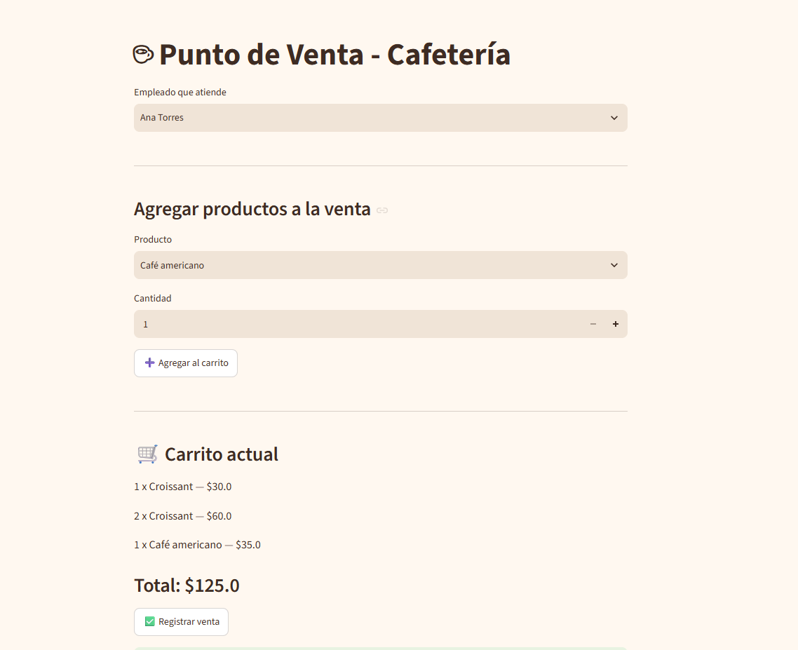

Cafetería POS
Sistema de gestión de principio a fin: base de datos relacional, lógica de negocio en backend e interfaz de usuario. Pensado para pequeños negocios que hoy operan con Excel, capturas y facturas sueltas.
Python · Streamlit · Supabase (PostgreSQL)